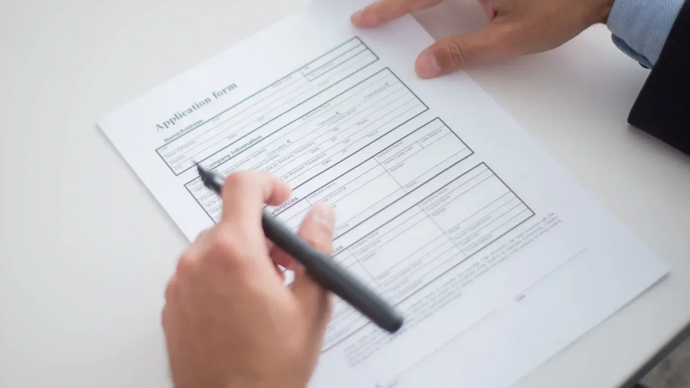

Introduction
Cannabis license residency requirements are at the center of a growing disagreement among federal appeals courts over whether states can favor local residents when awarding cannabis business licenses. For operators looking to expand beyond their home markets, that disagreement creates a practical problem: a restriction that faces constitutional scrutiny in one jurisdiction may withstand the same challenge in another.
The dispute could now reach the U.S. Supreme Court. On September 10, 2026, Peridot Tree filed a petition asking the justices to review a Ninth Circuit decision involving cannabis licensing restrictions in Washington State and Sacramento, California. The Court’s official docket confirms that the petition remains pending. The Court has not agreed to hear the case or decided whether the challenged restrictions are constitutional.
This is also not the first related dispute to reach the justices. On February 23, 2026, the Supreme Court declined to review a challenge involving Maryland’s social equity licensing program. Although that case raised a different question, the denial left the broader uncertainty unresolved.
For cannabis businesses, these developments affect more than courtroom arguments. Residency provisions can influence who qualifies for a license, which applicants receive priority, and whether a proposed ownership arrangement meets a program’s requirements. Those questions belong at the beginning of an expansion plan, before an applicant spends money on premises, application preparation, or a potential acquisition.
CannDelta helps operators assess licensing requirements across markets and prepare applications that account for changing regulatory conditions. Understanding the cannabis license circuit split is an important part of that preparation.
Key Takeaways
- Federal appeals courts disagree on whether the Dormant Commerce Clause applies to discriminatory cannabis licensing rules when the underlying market is prohibited under federal law.
- The First Circuit struck down Maine’s medical dispensary residency requirement, while the Second Circuit ruled against New York’s preference for applicants with qualifying New York marijuana convictions.
- The Ninth Circuit upheld the dismissal of challenges to residency restrictions in Washington State and Sacramento, taking a different approach to federal prohibition.
- A Supreme Court petition filed on September 10, 2026, seeks review of the Ninth Circuit decision. Filing a petition does not mean the Court has agreed to hear the case.
- The Court previously declined a related Maryland petition on February 23, 2026. That denial did not establish a nationwide answer to the cannabis residency question.
- Operators should review the specific licensing provision and governing court decisions before assuming that an out-of-state applicant is eligible or that a residency restriction can be successfully challenged.
What the Circuit Split Actually Is
The Dormant Commerce Clause is a constitutional doctrine that generally limits states from discriminating against out-of-state businesses.
Its basic purpose is familiar: states should not use their regulatory powers to give local businesses an unfair advantage over competitors from elsewhere. In cannabis licensing, however, courts have disagreed about how that principle interacts with federal prohibition.
The central question is whether a state-authorized cannabis market receives this constitutional protection even when participation in that market violates federal law. The First and Second Circuits have answered yes in the disputes before them. The Ninth Circuit has reached the opposite conclusion. The Congressional Research Service’s September 2026 analysis outlines the competing approaches and their implications for state licensing programs.
The cases also demonstrate that geographic preferences can take different forms. An applicant reviewing a program may encounter:
- A requirement that specified owners, officers, or directors live in the state.
- A minimum period of residence in a state or city.
- Preferential treatment based on a qualifying history or connection within the state.
These provisions do not necessarily operate in the same way. Some can prevent an applicant from qualifying altogether. Others can allow an application to proceed while giving competing applicants a better chance of receiving a license.
In Maine, the dispute concerned a direct restriction on dispensary leadership and ownership. In Northeast Patients Group v. United Cannabis Patients & Caregivers of Maine, the First Circuit considered a requirement that officers and directors of medical marijuana dispensaries be Maine residents.
The requirement affected a proposed acquisition by High Street Capital Partners, whose owners lived outside Maine. Under the existing rule, the resulting business would have been unable to operate as a qualifying dispensary.
In its August 2022 decision, the First Circuit affirmed that the residency requirement violated the Dormant Commerce Clause. Federal prohibition did not, in the court’s view, give Maine permission to exclude out-of-state participants through a protectionist licensing rule. The court also concluded that Congress had not authorized that discrimination.
New York’s dispute involved an application preference rather than an equivalent blanket residency requirement. In Variscite NY Four, LLC v. New York State Cannabis Control Board, applicants challenged a framework that gave extra priority to people meeting specified conditions, including a qualifying marijuana conviction under New York law, personally or through a relative.
The plaintiffs had relevant California convictions, which did not qualify them for the same advantage.
The Second Circuit’s August 2025 decision found that the Dormant Commerce Clause applied and that Congress had not clearly permitted protectionist cannabis licensing measures. The 2–1 ruling rejected New York’s conviction-based preference, vacated the denial of preliminary relief, and returned the case to the district court for further proceedings.
The Ninth Circuit took a different approach in January 2026. Its consolidated Peridot Tree cases concerned residency restrictions in Washington State and Sacramento. A unanimous panel upheld the dismissal of both challenges.
In its January 2 opinion, the court declined to extend the Dormant Commerce Clause to protect interstate commerce in a marijuana market Congress had prohibited. It emphasized the caution courts must exercise before using the doctrine to invalidate state and local laws.
That disagreement is the foundation of the current cannabis license circuit split. The courts are interpreting the relationship between federal prohibition and constitutional limits on state discrimination differently.
For businesses, the lesson is practical: permission to apply, access to preferential treatment, and restrictions on ownership each deserve separate attention. A successful application strategy starts with understanding the actual rule governing the target market and the legal framework in which that rule operates.
Why This Matters Right Now
The disagreement between federal appeals courts has immediate consequences for businesses evaluating cannabis license residency requirements. Operators must account for the legal framework governing each target market, alongside the application rules published by its regulator.
In the Ninth Circuit, the Peridot Tree ruling allows the challenged residency restrictions to remain enforceable against the Dormant Commerce Clause claims presented in those cases. In the First and Second Circuits, discriminatory residency provisions and related preferences face scrutiny under precedents applying the doctrine to cannabis licensing.
The geographic reach of those decisions matters. Under the federal statute defining judicial circuits:
- The First Circuit covers Maine, Massachusetts, New Hampshire, Rhode Island, and Puerto Rico.
- The Second Circuit covers Connecticut, New York, and Vermont.
- The Ninth Circuit covers Alaska, Arizona, California, Hawaii, Idaho, Montana, Nevada, Oregon, and Washington, along with specified Pacific territories.
These boundaries identify the appellate precedent governing federal courts in those jurisdictions. They do not establish that every state within a circuit imposes a residency requirement, or that every geographic preference will receive the same treatment.
For an applicant, the practical starting point is the actual licensing provision. A rule concerning ownership may raise different questions from one concerning application priority. A requirement to secure premises within the state also serves a different function from a requirement that an owner have lived there for several years. Treating every local connection as an interchangeable residency restriction can produce an inaccurate assessment of eligibility.
The possibility of Supreme Court review adds another layer of uncertainty. In its September 3, 2026, report, the Congressional Research Service concluded that the circuit split “likely increases the odds” that the Court will eventually review the issue. It also identified changes in federal marijuana regulation as a potential reason the justices might hesitate to take a case decided under an earlier legal framework.
The September Peridot Tree petition gives the Court a direct opportunity to consider the Ninth Circuit’s approach. According to the official docket, Justice Elena Kagan extended the filing deadline to September 10, 2026, and the petitioners filed that day. As of September 30, the petition is pending, with responses due October 15.
That timetable does not establish when or whether the Court will accept the case. Businesses with application deadlines or investment decisions approaching should plan around current requirements rather than assume a nationwide ruling will arrive before they need to act.
Maryland’s litigation also demonstrates why the details of a preference matter. In Jensen v. Maryland Cannabis Administration, the Fourth Circuit considered a social equity qualification based on attendance at a qualifying Maryland institution of higher education.
The applicant had attended a California institution and argued that Maryland’s criterion discriminated against nonresidents. The court rejected that argument because the challenged qualification did not require Maryland residency. A person living elsewhere could qualify through attendance at an eligible Maryland institution.
The Fourth Circuit expressly left open whether the Dormant Commerce Clause applies to the marijuana market. Its decision addressed whether the particular criterion was discriminatory, rather than adopting either side of the broader circuit split.
For operators comparing expansion opportunities, that distinction reinforces the need for a program-specific review. A cannabis residency requirement lawsuit in one market may offer useful context without answering the eligibility questions arising in another.

Why the Supreme Court Might Still Pass
A circuit split creates a reason for Supreme Court review, but it does not guarantee that the justices will accept a particular petition. The Court exercises discretion over which cases it hears, and a dispute must present a suitable opportunity to resolve the question before it.
The Supreme Court already declined the related Maryland petition on February 23, 2026. That denial left the Fourth Circuit’s judgment in place without resolving whether the Dormant Commerce Clause applies to discriminatory cannabis residency restrictions nationwide. It also supplied no explanation establishing why the justices chose to pass.
The distinction between the Maryland case and Peridot Tree is significant. Maryland’s case turned on a finding that the challenged criterion was not discriminatory. Peridot Tree directly concerns the Ninth Circuit’s conclusion that the doctrine does not extend to the federally prohibited marijuana market.
Nevertheless, changes in federal policy could complicate the question the petitioners want the Court to answer.
In its July 29 analysis, Duane Morris suggested that rescheduling could change the legal landscape and potentially moot the dispute over the doctrine’s application. That is an analyst’s explanation of a possible consideration, rather than a reason given by the Supreme Court itself.
Rescheduling also requires careful explanation. Moving marijuana to Schedule III does not automatically authorize every activity permitted by a state cannabis license. Federal registration requirements and other restrictions can continue to apply.
The Department of Justice’s April 2026 order moved specified medical marijuana categories to Schedule III and established a registration pathway for qualifying state medical marijuana licensees. Its scope did not amount to nationwide legalization of state adult-use cannabis businesses.
Whether a federal change makes a particular lawsuit moot depends on its effect on the challenged restriction and the parties’ continuing dispute. A change in scheduling could influence the reasoning courts use without necessarily removing every licensing barrier or resolving every pending claim.
For businesses monitoring the petition, three developments deserve attention:
- Supreme Court action: Whether the justices grant review, deny the petition, or request additional briefing.
- Federal regulatory changes: Whether new rules alter the federal status of the activities involved.
- Licensing changes: Whether the relevant state or municipality revises the challenged eligibility requirements.
Each could affect the dispute differently. Operators should therefore distinguish a pending petition from an accepted case, and distinguish a change in federal scheduling from a change in state application eligibility.
The business implication is straightforward: expansion plans need to remain workable under the rules currently governing the target market. Potential Supreme Court review belongs in the assessment of uncertainty, alongside application timing, ownership requirements, and the availability of licenses.
What This Means for Multi-State Operators and Out-of-State Applicants Right Now
For multi-state operators, cannabis license residency requirements should be reviewed before a market becomes part of an expansion budget. A state may offer attractive demand, available properties, and a suitable license category while imposing eligibility conditions that affect whether the proposed applicant can participate.
Start by confirming which federal circuit governs the state where you intend to apply. The First and Second Circuits have precedents applying the Dormant Commerce Clause to discriminatory cannabis licensing provisions. The Ninth Circuit has rejected that approach in the Peridot Tree cases. Those differences shape the legal environment in which an application will be assessed.
However, circuit precedent is only one part of the review. The particular rule, subsequent amendments, and any applicable court orders also matter. A decision involving another state does not automatically remove a restriction from your target market’s application process.
Before committing capital, applicants should establish:
- Who must qualify: Determine whether eligibility conditions apply to the business, individual owners, officers, directors, or other controlling parties.
- What the requirement measures: Distinguish current residency from a minimum period of residence, a qualifying conviction, or another geographic connection.
- How it affects the application: Identify whether the provision prevents participation, determines access to a particular license category, or changes application priority.
- Which requirements are currently operative: Review the latest application materials alongside relevant amendments and court orders.
- When eligibility must be demonstrated: Confirm the applicable dates and supporting documentation before building an application timeline.
This review should happen early enough to influence the business decision. Discovering an eligibility problem after securing premises or preparing extensive operational plans can create avoidable expenses.
For an acquisition, the same principle applies to the proposed ownership change. An existing license does not, by itself, establish that a new owner will meet every applicable qualification. For a new application, eligibility should be assessed against the actual applicant and disclosed ownership structure.
Applicants should also keep eligibility and competitiveness separate. Permission to submit an application does not necessarily mean access to every preference available within the program. Conversely, failing to qualify for a preference does not always make the applicant ineligible for the underlying license.
Changes to licensing programs can require businesses to revisit earlier assumptions. CannDelta’s guide to Rhode Island’s 2026 cannabis license reset provides a related resource for applicants reviewing that market. The broader planning lesson is to work from current requirements rather than rely on an earlier description of the program.
Not sure whether a state’s residency rule could affect your license application? Talk to a multi-state cannabis license consultant before you commit capital to a market that might not be accessible yet.
CannDelta license application consulting can help applicants organize eligibility information, identify documentation needs, and coordinate application preparation with the requirements of the target jurisdiction. Where a provision raises a disputed constitutional question, legal counsel can assess its implications for the particular applicant.
With commercial cannabis license application support, businesses can bring their regulatory review, application documents, and operational planning into a coordinated process.
The objective is a licensing strategy that remains grounded in the rules currently governing the market. Potential litigation outcomes can inform the assessment of uncertainty, but they should not replace a clear understanding of what the regulator requires today.
Frequently Asked Questions
The Dormant Commerce Clause is a constitutional doctrine that generally limits states from discriminating against out-of-state businesses. In cannabis licensing, it matters because residency restrictions and certain geographic preferences can affect access to a state-authorized market.
Federal appeals courts disagree about whether the doctrine applies when the underlying cannabis activity is prohibited under federal law. The First and Second Circuits have applied it to challenged licensing provisions; the Ninth Circuit declined to do so in Peridot Tree. This disagreement makes the governing jurisdiction an important part of reviewing an applicant’s position.
There is no single nationwide answer covering every cannabis license category. The Ninth Circuit’s Peridot Tree decision left the challenged restrictions in Washington State and Sacramento enforceable against the Dormant Commerce Clause claims before it. That does not mean every state within the circuit imposes an equivalent restriction.
Elsewhere, the First and Second Circuits have issued decisions against particular discriminatory licensing provisions. Applicants should check the current rule for their target program, the governing precedent, and any subsequent amendments or court orders. A circuit’s position on the constitutional doctrine is different from a complete inventory of each state’s licensing requirements.
The Supreme Court has not agreed to hear the pending Peridot Tree case. The petition was filed on September 10, 2026, and docketed on September 15. As of September 30, responses are due October 15.
A petition asks the justices to accept a case; it does not establish that review will occur. The Court previously denied the related Maryland petition on February 23, 2026. Operators should monitor the official docket while continuing to plan around current licensing requirements.
Yes. A residency restriction can prevent an out-of-state operator or its proposed owners from meeting a program’s eligibility requirements. Other provisions may allow participation while limiting access to application preferences.
The effect depends on the specific licensing framework and the requirements currently in force. Applicants should establish whether the provision affects basic eligibility, priority, ownership, or another qualification before spending on an application. If enforceability is disputed, a case-specific legal assessment is necessary; a successful challenge elsewhere does not automatically authorize an applicant to disregard the target program’s rule.
Until the Supreme Court resolves this split, or Congress or federal regulatory changes alter the underlying question, cannabis license residency requirements will remain a source of uncertainty for businesses entering new markets. Governing precedent and the specific licensing framework both affect an applicant’s position. CannDelta helps multi-state operators and out-of-state applicants understand the requirements they face and build a licensing strategy that accounts for uncertainty before committing capital.